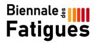

Réponse de la Ministre de la Santé à la question posée par la députée Sandrine Runel sur l'EM/SFC et le Covid Long
02/11/2026
Il y a quelques semaines, Sandrine Runel interpellait par une question écrite Madame la ministre de la Santé sur la situation des personnes atteintes d'encéphalomyélite myalgique (EM/SFC) et de Covid long : errance diagnostique, absence de reconnaissance en affection de longue durée, critères d'invalidité inadaptés et manque criant de formation des soignants
NOUVEAU : UN PROGRAMME DE FORMATION CONTINUE DEDIE AUX FATIGUES
01/09/2026
Les fatigues ont un impact majeur sur la qualité de vie des personnes concernées, constat partagé largement depuis 2021 au sein du Groupe de Travail national sur les Fatigues (GTFs, organisateur de la #Biennaledesfatigues). Face au manque criant d'offre de formation sur le sujet, le GTFs et l'ASFC ont apporté les savoirs expérientiels des patients pour nourrir la création d'un Diplôme Universitaire destiné aux professionnels.
PETITION
10/02/2026
En vue de la création d’ un IHU dédié à l’ EM/SFC
Programme de la Biennale des Fatigues du 21 novembre 2025
14/11/2025
A Nice et en direct sur Teams
Communiqué et dossier de Presse Biennale des Fatigues
06/11/2025
21 novembre 2025
"Epuisé" par Johann Margulies, parution le 12 novembre 2025
27/10/2025
Johann MARGULIES (membre de l'ASFC) milite pour la reconnaissance des maladies chroniques invisibles. Entre journal intime et essai philosophique, Épuisé dresse le portrait d'une génération de malades oubliés – COVID long, syndromes post-infectieux, encéphalomyélite myalgique – abandonnés par une médecine cynique et des institutions sourdes.

L'ASFC est à l'origine de la journée nationale des fatigues, qui se tient tous les 2 ans.
Découvrez les replays de la Biennale des Fatigues du 21 novembre 2025 sur la chaîne Youtube de la Journée/Biennale des fatigues
Grâce au travail interassociatif et transversal sur la fatigue impulsé par l'ASFC, deux formations inédites ont vu le jour (ouverture en 2026-2027) : voir détail en actus, lire le communiqué de presse
Faire un don
Téléchargez la plaquette de l'ASFC
Chaine youtube de l' ASFC
Blog sur le pacing de l'ASFC
Groupe Air&Go sur le " pacing" proposé par une bénévole de l'ASFC
LA FATIGUE C'EST NATUREL,
PAS L'EPUISEMENT INTENSE !
Vous connaissez un épuisement qui dure, qui vous a contraint à réduire vos activités, qui s'accompagne d'autres symptômes (douleurs, sommeil non récupérateur, troubles cognitifs, intolérance à la station debout)... Vous vous questionnez sur l'origine de ses troubles, êtes en recherche de diagnostic, de pistes de solutions : contactez-nous !
L'Association Française du Syndrome de Fatigue Chronique est une association loi de 1901 à but non lucratif, créée en 1998 et agréée au niveau national par le Ministère de la solidarité et de la Santé, entre 2010 et juin 2026, pour représenter les usagers du système de santé
Elle est membre d' ALLIANCE MALADIES RARES (AMR), et de France Assos Santé et d'EMEA(European Alliance for ME). Elle a été reconnue d'Intérêt Général et à ce titre peut recevoir des dons.
Notre association a un statut national mais possède également des délégations régionales qui accueillent les malades souhaitant une information. Depuis 2020, les permanences et réunions régionales ont lieu majoritairement en visio-conférence.
L'ASFC collabore au développement d'une solution thérapeutique avec une PME innovante spécialisée en médecine basée sur les mécanismes : Bio-Modeling Systems
ACCUEILLIR - INFORMER
AIDER - ACCOMPAGNER - ORIENTER - ALERTER - AGIR

- inserm.fr/actualites/ru
- alliance-maladies-rares
- eurordis.org
- orpha.net/consor/cgi-bi
- maladiesraresinfo.org
- plateforme-maladiesrare
- has-sante.fr
- fnath.org
- france-assos-sante.org/
- sfr.larhumatologie.fr
- hemochromatose.fr
- association-afvd.com/
- afgs-syndromes-secs.org
- droitsdesmalades.fr/
- sante.gouv.fr
- phoenixrising.me
- investinme.org
- iacfsme.org/
- solvecfs.org/
- meassociation.org.uk/
- https://aqem.org
 Ce site respecte les
principes de la charte HONcode.
Ce site respecte les
principes de la charte HONcode.
Vérifiez ici.
Dernière mise à jour le 19/09/2026
Copyright ASFC ©2012-2026 mentions légales - Réalisé par OPALE WEB - OPALIS'TIC